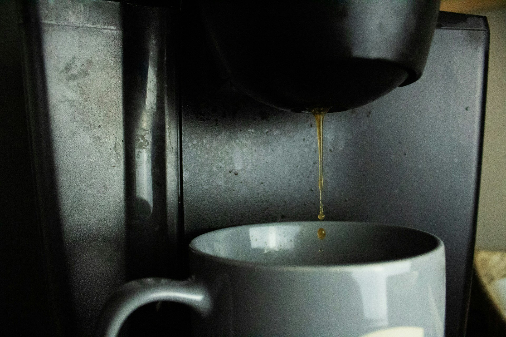

Dynamic Column Names in R: Seven Approaches Compared
r
metaprogramming
r-language
A comprehensive guide to adding columns with programmatically-generated names in R dataframes. Covers base R, tidyverse (classic and modern), data.table, collapse, rlang::inject(), and do.call patterns.
Author
Ronald G. Thomas
Published
February 16, 2026
Introduction
While reviewing some production R code recently, the following pattern appeared:
data |>mutate(!!paste0(measure, "_bl") := baseline_value,!!paste0(measure, "_cng") := current - baseline_value )
The !! and := operators were unfamiliar. After investigation, they proved to be part of R’s tidy evaluation system: a powerful but often misunderstood feature for programmatic data manipulation.
This exploration led to cataloging seven different approaches to creating columns with dynamic names in R:
Base R using [[ assignment
Base R using do.call() and setNames()
The “classic” tidyverse approach with !! and :=
The modern tidyverse glue-style syntax
The rlang expression splicing pattern
The data.table approach
The collapse package approach
The Problem
Consider a function that calculates change scores for any cognitive measure. Given a dataframe with columns rid (subject ID), vis (visit), and a measure like mmse, we wish to create two new columns:
mmse_bl: the baseline value for each subject
mmse_cng: the change from baseline at each visit
The column names must be constructed dynamically because the function should work for any measure (mmse, adas13, cdr, etc.).
How it works: The [[ operator accepts character strings for column names, unlike $ which requires literal names. Writing df[["mmse"]] is equivalent to df$mmse, but the former allows df[[variable]] where variable contains the column name.
Advantages:
No dependencies beyond base R
Syntax is familiar to programmers from other languages
Explicit and easy to debug
Disadvantages:
Verbose, especially with grouped operations
Requires explicit loops for by-group calculations
Mutable state pattern (result is modified in place)
Does not integrate with dplyr pipelines
Performance degrades with many groups
When to use: Small scripts with no package dependencies, or when interfacing with code from other languages where this pattern is standard.
Approach 2: Base R with do.call() and setNames()
A more functional base R approach avoids explicit loops:
How it works:setNames() creates a named list where the names come from a character vector. do.call(cbind, ...) then binds these columns to the original dataframe. The tapply() function computes grouped summaries without explicit loops.
Advantages:
No external dependencies
Functional style (no mutable state)
Vectorized operations for better performance
Disadvantages:
Dense, less readable syntax
tapply() returns an array requiring careful indexing
Type coercion issues (note the as.numeric() calls)
Returns a data.frame, not a tibble
When to use: Package development where minimizing dependencies is critical, or performance-sensitive code where the overhead of dplyr is unacceptable.
A wooden filing drawer pulled open to reveal several folders, each labeled in a different handwriting style: the same data, named differently across approaches.
Approach 3: Classic Tidyverse with !! and :=
The tidyverse introduced tidy evaluation to handle dynamic column names. Two operators are central:
:= (the “walrus” operator): Allows the left-hand side of an assignment to be evaluated
!! (bang-bang): Unquotes an expression, forcing immediate evaluation
How it works: Standard mutate() syntax like mutate(new_col = value) treats new_col as a literal name. The = operator does not evaluate its left-hand side. The := operator changes this behavior. When mutate(!!bl_col := value) is written, the !! forces bl_col to be evaluated (yielding "mmse_bl"), and := uses that string as the column name.
The .data pronoun explicitly references columns in the dataframe, avoiding ambiguity between dataframe columns and local variables.
Advantages:
Integrates directly into dplyr pipelines
Grouped operations are trivial
Declarative, readable intent (once the syntax is learned)
Disadvantages:
Unfamiliar syntax for newcomers (!! and := are not standard R)
Requires understanding tidy evaluation concepts
The rlang package must be available (loaded with dplyr)
When to use: Legacy tidyverse code (pre-dplyr 1.0), or when the full power of quasiquotation is needed for complex metaprogramming.
Approach 4: Modern Tidyverse with Glue Syntax
Starting with dplyr 1.0 (June 2020), a cleaner syntax emerged using glue-style interpolation:
How it works: The string "{measure}_bl" is interpolated like glue::glue(), substituting the value of measure directly. This occurs at the level of the column name, with := still required to enable left-hand side evaluation.
Advantages:
Most readable of all tidyverse approaches
Reduces cognitive load (no need to remember !! semantics)
Consistent with glue syntax used elsewhere in the tidyverse
Disadvantages:
Requires dplyr >= 1.0
Still requires := (cannot use =)
Less flexible than !! for complex quasiquotation
When to use: New tidyverse code. This is the current recommended approach for dynamic column names in dplyr.
Approach 5: rlang Expression Splicing
For more explicit metaprogramming, rlang provides expr() for building expressions and !!! for splicing them into function calls:
How it works:expr() captures an expression without evaluating it, while !! inside expr() forces evaluation of specific parts. The result is a list of named expressions. The !!! (splice) operator unpacks this list into mutate(), equivalent to writing each expression as a separate argument.
Advantages:
Build expressions programmatically before evaluation
Useful when the number of columns is dynamic
Expressions can be inspected, modified, or logged before use
Clear separation between expression construction and evaluation
Disadvantages:
More verbose for simple cases
Requires understanding quasiquotation deeply
Overkill for straightforward dynamic naming
When to use: Complex metaprogramming where expressions must be built dynamically, such as generating an unknown number of columns based on input data, or when inspecting or logging expressions before evaluation is desirable.
A brass stencil set with interchangeable letter plates beside a partially stenciled label: programmatically generating a name.
Approach 6: data.table
The data.table package has its own := operator that predates tidyverse adoption:
How it works: In data.table, wrapping a variable in parentheses on the left-hand side of := forces evaluation: (bl_col) evaluates to "mmse_bl". Without parentheses, bl_col := value would create a column literally named “bl_col”. The .SD pronoun (Subset of Data) references the current group’s data.
Advantages:
Extremely fast, especially for large datasets
Memory efficient (modifies in place by reference)
Mature, battle-tested codebase
The by argument handles grouping concisely
Disadvantages:
Different mental model from base R and tidyverse
Modify-by-reference semantics can cause subtle bugs
Less readable for those unfamiliar with data.table idioms
Parentheses syntax (col) is easy to forget
When to use: Performance-critical applications, very large datasets (millions of rows), or codebases already using data.table.

Minimalist high-speed data tools.
Approach 7: collapse
The collapse package offers high-performance data manipulation with its own idioms:
library(collapse)calculate_change_collapse <-function(data, measure) { bl_col <-paste0(measure, "_bl") cng_col <-paste0(measure, "_cng") bl_data <-fsubset(data, vis =="bl") bl_values <-get_vars(bl_data, c("rid", measure))names(bl_values)[2] <- bl_col result <-join(data, bl_values, on ="rid", how ="left") result[[cng_col]] <- result[[measure]] - result[[bl_col]] result}calculate_change_collapse(df, "mmse")
left join: data[rid] 6/6 (100%) <3:1st> bl_values[rid] 2/2 (100%)
How it works: collapse provides fast versions of common operations (fsubset, get_vars, join, etc.). Unlike dplyr, collapse does not use tidy evaluation, so dynamic column access requires base R syntax like get_vars() with character vectors and direct [[ assignment. The approach above uses a join strategy rather than grouped mutation.
Advantages:
Extremely fast (often faster than data.table for certain operations)
Low memory footprint
Works with both data.frames and data.tables
Good for time series and panel data
Disadvantages:
Smaller user community than tidyverse or data.table
Inconsistent tidy evaluation support across functions
Often requires mixing collapse functions with base R syntax
Less comprehensive documentation
When to use: Performance-critical code, especially time series or panel data analysis. Also useful when speed is needed but data.table’s reference semantics are to be avoided.
Comparison Summary
Approach
Dependencies
Readability
Performance
Best For
Base R [[
None
Moderate
Low
No-dependency scripts
Base R do.call
None
Low
Moderate
Package development
Classic !!:=
dplyr
Low
Moderate
Legacy tidyverse code
Modern glue
dplyr >= 1.0
High
Moderate
New tidyverse code
rlang !!! splice
rlang
Moderate
Moderate
Complex metaprogramming
data.table
data.table
Moderate
High
Large datasets
collapse
collapse
Moderate
Very High
Performance-critical work
Practical Example: Multiple Measures
The real power emerges when processing multiple measures:
df_multi <-tibble(rid =rep(c("001", "002"), each =3),vis =rep(c("bl", "m06", "m12"), 2),mmse =c(28, 27, 25, 30, 29, 28),adas =c(12, 14, 18, 10, 12, 15),cdr =c(0.5, 0.5, 1.0, 0.5, 0.5, 0.5))calculate_all_changes <-function(data, measures) { result <- data |>group_by(rid)for (measure in measures) { result <- result |>mutate("{measure}_bl":= .data[[measure]][vis =="bl"][1],"{measure}_cng":= .data[[measure]] - .data[[paste0(measure, "_bl")]] ) } result |>ungroup()}calculate_all_changes(df_multi, c("mmse", "adas", "cdr"))
# Wrong: creates column literally named "{measure}_bl"mutate("{measure}_bl"= value)# Correct: evaluates the stringmutate("{measure}_bl":= value)
2. Forgetting parentheses (data.table)
# Wrong: creates column named "bl_col"dt[, bl_col := value]# Correct: evaluates bl_col to get "mmse_bl"dt[, (bl_col) := value]
3. Confusing column references
# Ambiguous: is 'measure' a column or variable?mutate("{measure}_bl":= measure[vis =="bl"][1])# Clear: .data[[measure]] references the columnmutate("{measure}_bl":= .data[[measure]][vis =="bl"][1])
4. Reference semantics in data.table
dt <-as.data.table(df)dt2 <- dt # This is NOT a copy!dt2[, new_col :=1] # Modifies both dt and dt2# Safe copy:dt2 <-copy(dt)
What Did We Learn?
Lessons Learned
:= enables dynamic LHS: In both tidyverse and data.table, this operator allows the left side of an assignment to be evaluated
!! is the unquote operator: Forces immediate evaluation of an expression in tidy eval contexts
Glue syntax is cleaner: "{var}_suffix" is more readable than !!paste0(var, "_suffix")
Parentheses matter in data.table: (col) evaluates, col is literal
.data removes ambiguity: Always use .data[[col]] for column references in functions
Choose based on context: Readability (glue) vs performance (data.table) vs no dependencies (base R)
Related posts in this cluster
This post is part of the R Language and Metaprogramming series. Recommended reading order: